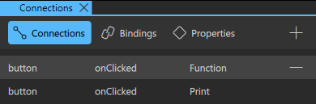
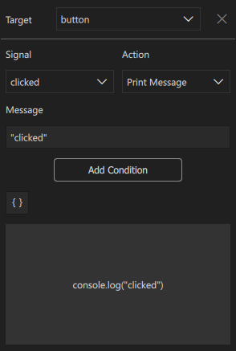
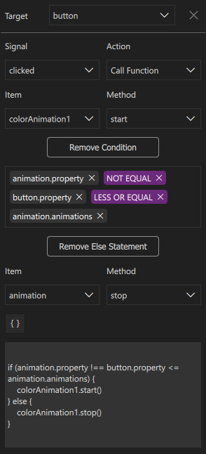
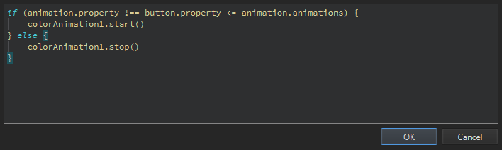

Connecting Components to Signals
A signal and handler mechanism enables components to respond to application events, which are represented by signals. When a signal is emitted, the corresponding signal handler is invoked to respond to the event by using scripts or other operations placed in the handler.
To receive a notification when a particular signal is emitted for a particular component, the component definition should declare a signal handler named on<Signal> where <Signal> is the name of the signal, with the first letter capitalized. The signal handler should contain the JavaScript code to be executed when the signal handler is invoked.
Components have predefined signals that are emitted when users interact with the application. For example, the Mouse Area component has a clicked signal that is emitted whenever the mouse is clicked within the area. Since the signal name is clicked, the signal handler for receiving this signal is named onClicked.
A signal is automatically emitted when the value of a property changes. This type of signal is a property change signal and signal handlers for these signals are written in the form on<Property>Changed, where <Property> is the name of the property, with the first letter capitalized.
For example, the Mouse Area component has a pressed property. To receive a notification whenever this property changes, you would use a signal handler called onPressedChanged.
For more information about signals and signal handlers, see Signal and Handler Event System.
Connecting Components to Signals in the Connection View
You can connect components to signals that are available to them in Connections. Then define Action for them. You can put logical conditions on this Actions to control them according to your needs.

Initiate a new connection for a component:
- Select the component you want to connect in the Navigator or 2D view.
- Go to the Connections tab in the Connections view.
- Select the
 (Add) button to add a connection.
(Add) button to add a connection.

Connect component Signal to Action:
- Select the interaction Signal for the Target component with which you want to connect an Action.
- Select an Action that you want to implement when the selected Signal for the Target component is initiated.
- You get different properties or sub-sections associated with the selected Action. Select Item/Method/State/Property/Value from related sub-sections. This way you can formulate changes in the design by manipulating components.
- Select Add Condition to include a logic to the selected Action. To do this, you can first select the component you want to put logic on, and then select the conditional statements (i.e. AND, OR, EQUAL, NOT EQUAL, GREATER, LESS, GREATER OR EQUAL, LESS OR EQUAL) and then select another component to compare between them.
- Optional. You can include an Else Statement by selecting the Else Statement control and adding components and conditional statements in a similar way to the previous step.
- Optional. To use complex conditional statements, select the Manual Edit control. After you have entered your JavaScript statements, close the window to apply them.
Note: Select a connection to re-open the Connection Editor for any previously created Connection.
Note: Select (Remove) to delete a connection.
Actions and Conditions
You use the Connection Editor to create the JavaScript expressions for actions with conditions. An action connects a component to a signal, whereas conditions fetch property values from other components and compare them to each other. Based on that, you can later change the components with JavaScript expressions.
For more information about the logical operators that you can use to construct conditional expressions, see Summary of Logical Operators.
Creating JavaScript Expressions
There are two ways to create JavaScript expressions for actions:
- Follow the steps described above in Connect component Signal to Action. For a list of Actions and their properties, see Action Properties.

- Open the Manual Code Edit window from the Connections view and write JavaScript expressions with components and logical expressions manually.
Note: If you create a conditional expression by selecting options from the drop-down menus in the Connection view, you can only create a single level if-else expression. For nested level if-else expressions, use the Manual Code Edit.

Action Properties
| Action | 1st Property | 2nd Property |
|---|---|---|
| Call Function | Item: [Sets the component that is affected by the action of the Target component's Signal.] | Method: [Sets the item component's method that is affected by the Target component's Signal.] |
| Assign | From: [Sets the component and its property from which the value is copied when the Target component initiates the Signal.] | To: [Sets the component and its property to which the copied value is assigned when the Target component initiates the Signal.] |
| Change State | State Group: [Sets a State Group that is accessed when the Target component initiates the Signal.] | State: [Sets a State within the assigned State Group that is accessed when the Target component initiates the Signal.] |
| Set Property | Item: [Sets the component that is affected by the action of the Target component's Signal.] | Property: [Sets the property of the component that is affected by the action of the Target component's Signal.] |
| Print Message | Message: [Sets a text that is printed when the Signal of the Target component initiates.] | N/A |
Watch this video for practical examples of the Connection view workflow: